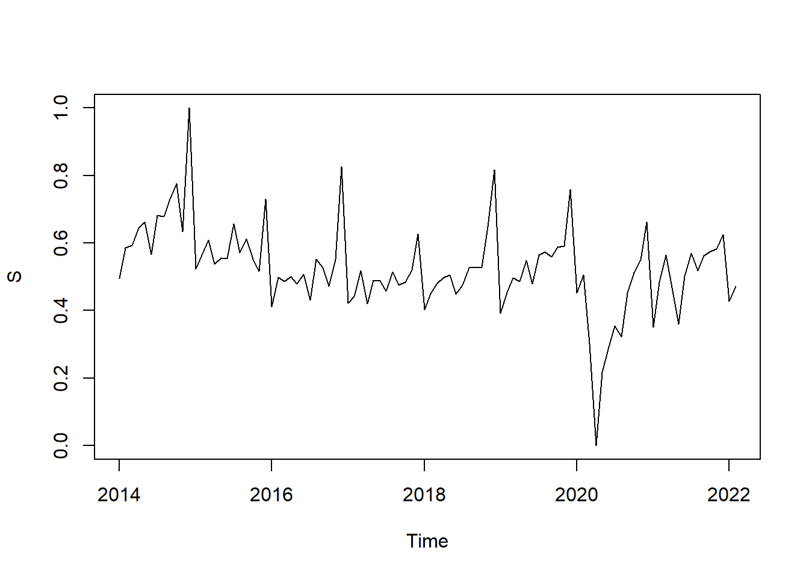
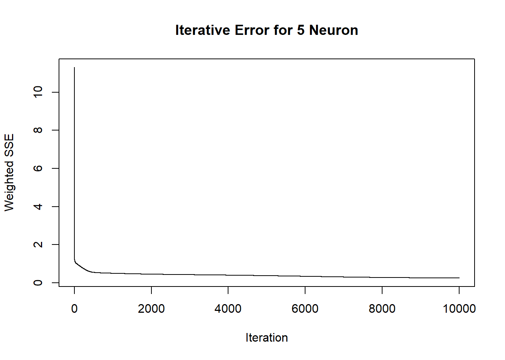
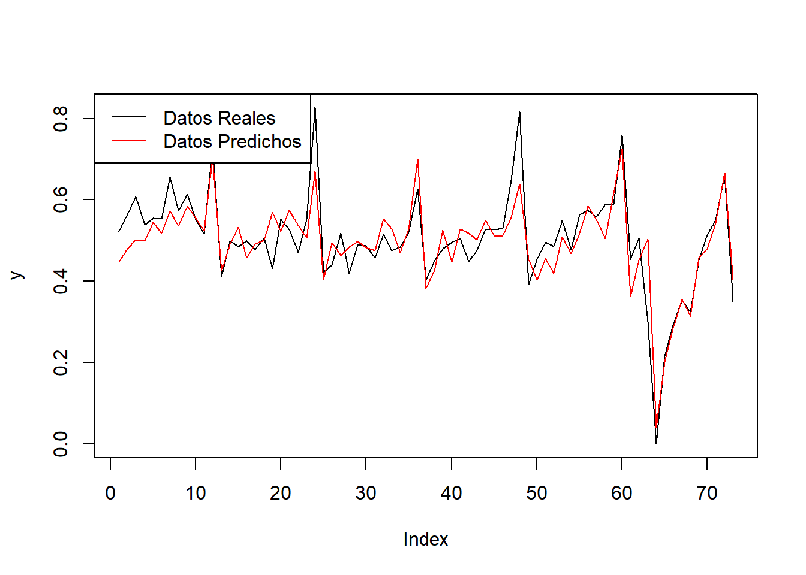
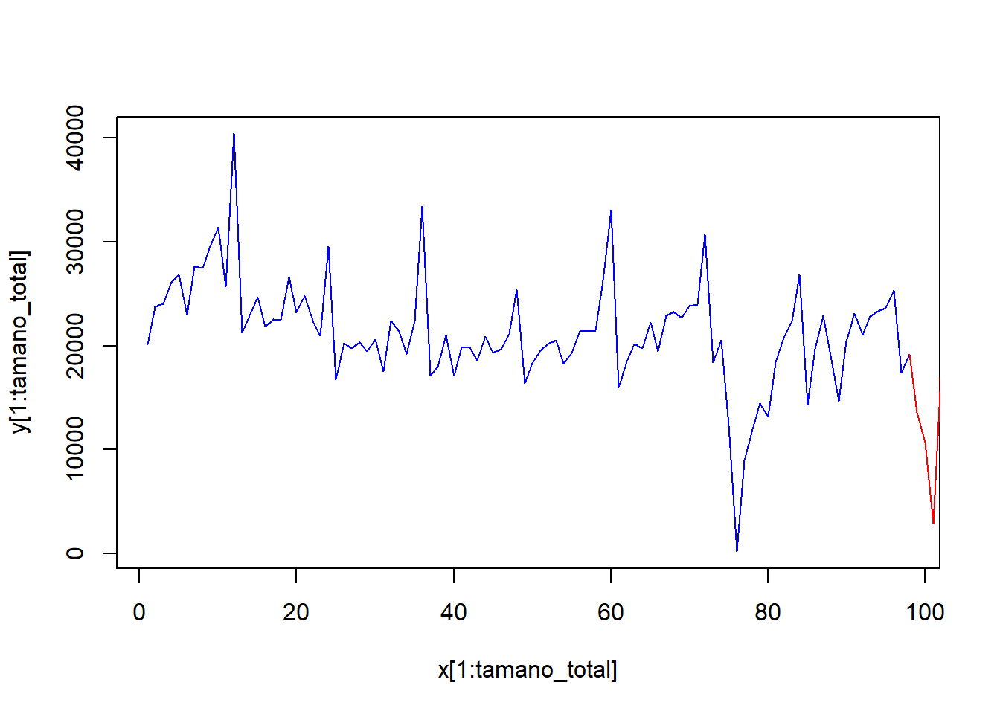
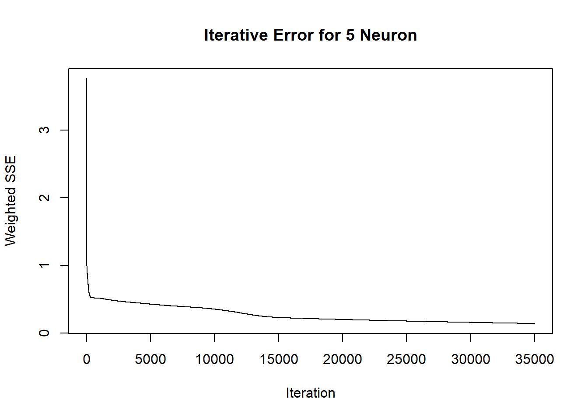
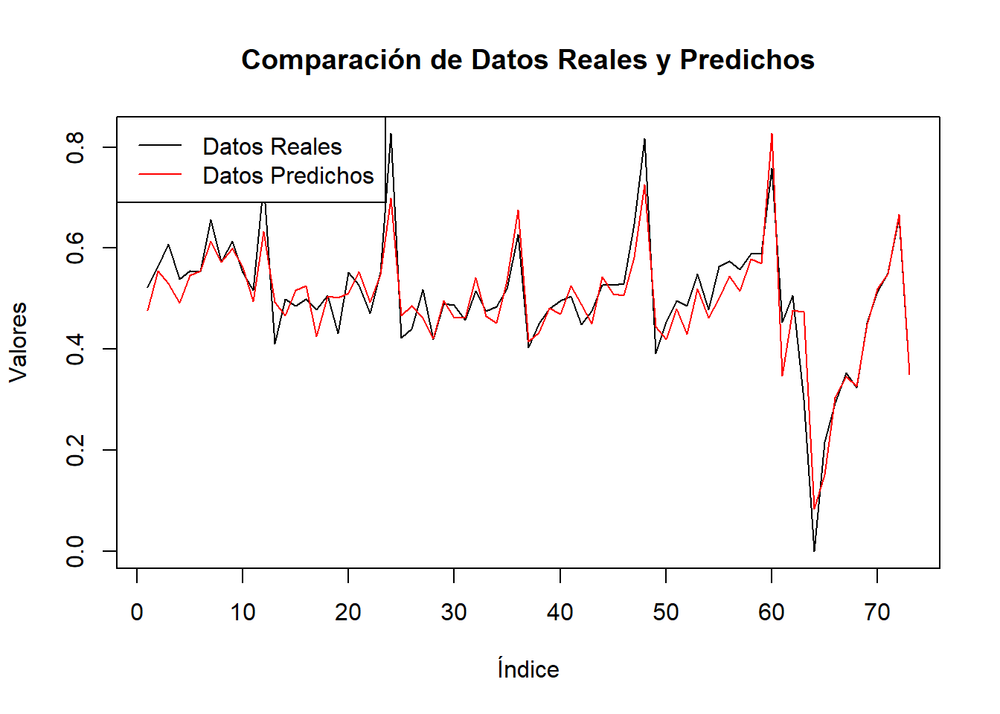
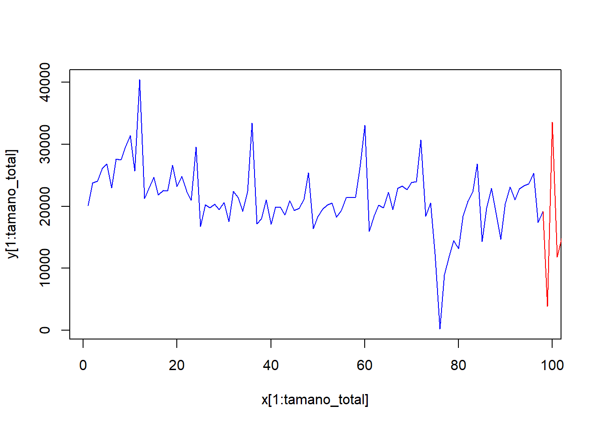

Chapter 8 Redes Neuronales Recurrentes (Modelos Elman y Jordan)
Una red neuronal recurrente no tiene una estructura de capas definida, sino que permiten conexiones arbitrarias entre las neuronas, incluso pudiendo crear ciclos, con esto se consigue crear la temporalidad, permitiendo que la red tenga memoria.
Los RNN se denominan recurrentes porque realizan la misma tarea para cada elemento de una secuencia, y la salida depende de los cálculos anteriores.
MODELO ELMAN
En las redes de Elman, las entradas de estas neuronas, se toman desde las salidas de las neuronas de una de las capas ocultas, y sus salidas se conectan de nuevo en las entradas de esta misma capa, lo que proporciona una especie de memoria sobre el estado anterior de dicha capa.
Creamos la serie de tiempo
Damos formato de serie de tiempo
## [1] 98Para aplicar redes neuronales debemos normalizar datos Para ello hemos asociado a nuestro dataset de base una variable “Z” y a partir de esta hemos realizar la normalización a través de la variable “S”.

A continuación comprobamos el numero de filas totales que contiene nuestro dataset.
## [1] 98Ahora dividiremos los conjuntos de entrenamiento en un 75% y prueba en un 25% respectivamente.
## [1] 0 1 2 3 4 5 6 7 8 9 10 11 12 13 14 15 16 17 18 19 20 21 22 23 24
## [26] 25 26 27 28 29 30 31 32 33 34 35 36 37 38 39 40 41 42 43 44 45 46 47 48 49
## [51] 50 51 52 53 54 55 56 57 58 59 60 61 62 63 64 65 66 67 68 69 70 71 72 73## [1] 74 75 76 77 78 79 80 81 82 83 84 85 86 87 88 89 90 91 92 93 94 95 96 97 98Ahora crearemos un dataframe con n columnas, cada una de las cuales adelantara un valor de la serie en el futuro, a través de una variable tipo zoo, equivalente al #periodo de retardo de la serie.
y <- as.zoo(S)
x1 <- Lag(y, k = 1)
x2 <- Lag(y, k = 2)
x3 <- Lag(y, k = 3)
x4 <- Lag(y, k = 4)
x5 <- Lag(y, k = 5)
x6 <- Lag(y, k = 6)
x7 <- Lag(y, k = 7)
x8 <- Lag(y, k = 8)
x9 <- Lag(y, k = 9)
x10 <- Lag(y, k = 10)
x11 <- Lag(y, k = 11)
x12 <- Lag(y, k = 12)
slogN <- cbind(y,x1,x2,x3,x4,x5,x6,x7,x8,x9,x10,x11,x12)A continuación eliminaremos los valores NA producidos al desplazar la serie:
Luego definimos los valores de entrada y salida de la red neuronal:
Ahora crearemos la red de Elman, probando diferentes tipos de combinaciones de neuronas en las capas ocultas e iteraciones máximas, ademas del ritmo de aprendizaje, para ajustar lo mejor posible la curva de predicción a la del modelo de la serie. De esta forma hemos llegado a estos valores a la hora de crear nuestra red. Asi mismo ponemos una semilla para que el resultado sea reproducible.
library(RSNNS)
set.seed(42)
fit<-elman(inputs[train],outputs[train],size=5,learnFuncParams=c(0.1),
maxit=10000)#En la gráfica siguiente vemos como evoluciona el error de la red con el numero de iteraciones para los parámetros expuestos.
plotIterativeError(fit, main = "Iterative Error for 5 Neuron") En la gráfica anterior se observa una convergencia rápida hacia cero, se espera entonces un ajuste rápido del modelo.
Ahora realizamos la predicción con el resto de los términos de la serie que son los datos #seleccionados para test, pasamos pues una vez entrenada a probarla y a representarla #graficamente para ver el ajuste del modelo.
y <- as.vector(outputs[-test])
plot(y,type="l")
pred <- predict(fit, inputs[-test])
lines(pred,col = "red")
legend("topleft", legend = c("Datos Reales", "Datos Predichos"),
col = c("black", "red"), lty = c(1, 1)) El ajuste predice bastante bien con los parametros elegidos, pues la curva del modelo de la serie y la de la prediccion parecen bastante ajustadas.
Esta representacion grafica se puede utilizar para ir ajustando la prediccion y el modelo a medida que vamos probando diferentes parametros de la red de Elman, de forma que la curva del modelo y de la prediccion queden lo mas ajustados posibles.
Ahora gracias al efecto memoria vamos a adelantarle a la serie al menos en un valor con una precision muy buena. Para ello volveremos a introducir los datos de entrenamiento.
## [,1]
## feb. 2021 0.3329012
## mar. 2021 0.2609815
## abr. 2021 0.0670051
## may. 2021 0.4164404
## jun. 2021 0.3693653
## jul. 2021 0.4730132
## ago. 2021 0.4960409
## sept. 2021 0.5433677
## oct. 2021 0.5297236
## nov. 2021 0.6084241
## dic. 2021 0.6646473
## ene. 2022 0.3588158
## feb. 2022 0.5120363Posteriori desnormalizaremos los datos:
## [,1]
## feb. 2021 13591.640
## mar. 2021 10702.193
## abr. 2021 2908.997
## may. 2021 16947.908
## jun. 2021 15056.622
## jul. 2021 19220.779
## ago. 2021 20145.938
## sept. 2021 22047.342
## oct. 2021 21499.177
## nov. 2021 24661.048
## dic. 2021 26919.869
## ene. 2022 14632.786
## feb. 2022 20788.571Aquí vemos la gráfica con los valores pronosticados con la linea roja. -Los valores que adelantamos en el tiempo corresponden a mod1, de los cuales adelantaremos 12 meses a futuro para nuestro estudio.
Ahora veamos la representación de los valores predecidos para el siguiente periodo.
x <- 1:(tamano_total+length(mod1))
y <- c(as.vector(Z),mod1)
plot(x[1:tamano_total], y[1:tamano_total],col = "blue", type="l")
lines( x[(tamano_total):length(x)], y[(tamano_total):length(x)], col="red")
## [1] 111MODELO JORDAN
En las redes Jordan, la diferencia esta en que la entrada de las neuronas de la capa de contexto se toma desde la salida de la red.
Realizamos las mismas operaciones que con la red Elman, sustituyendo el modelo, obtenemos el resultado para la red Jordan.
set.seed(42)
fit <-jordan(inputs[train],outputs[train],size=5,learnFuncParams=c(0.1),
maxit=35000)
plotIterativeError(fit, main = "Iterative Error for 5 Neuron")
y <- as.vector(outputs[-test])
plot(y, type = "l", main = "Comparación de Datos Reales y Predichos",
xlab = "Índice", ylab = "Valores")
pred <- predict(fit, inputs[-test])
lines(pred, col = "red")
legend("topleft", legend = c("Datos Reales", "Datos Predichos"),
col = c("black", "red"), lty = c(1, 1))
## [,1]
## feb. 2021 3884.444
## mar. 2021 33576.846
## abr. 2021 11833.495
## may. 2021 14823.377
## jun. 2021 13574.293
## jul. 2021 20448.654
## ago. 2021 18429.020
## sept. 2021 19670.796
## oct. 2021 20747.208
## nov. 2021 27825.488
## dic. 2021 25797.013
## ene. 2022 13655.142
## feb. 2022 17335.238x <- 1:(tamano_total+length(mod2))
y <- c(as.vector(Z),mod2)
plot(x[1:tamano_total], y[1:tamano_total],col = "blue", type="l")
lines( x[(tamano_total):length(x)], y[(tamano_total):length(x)], col="red")
8.1 Estimación del error Comparativo de los modelos con los valores actuales observados.
data=veh[99:110,]
data_real <- ts(data, start = c(2022,3), end=c(2023,02), frequency = 12)
data_real## Jan Feb Mar Apr May Jun Jul Aug Sep Oct Nov Dec
## 2022 20837 20622 22411 23306 23233 24386 23871 22577 22625 21880
## 2023 13852 15761Para Elman y Jordan al no ser modelos con forecast, lo convertimos en series de tiempo #para que lo acepte el comando accuracy.De tal forma que:
## [1] 13591.640 10702.193 2908.997 16947.908 15056.622 19220.779 20145.938
## [8] 22047.342 21499.177 24661.048 26919.869 14632.786## Jan Feb Mar Apr May Jun Jul
## 2022 13591.640 10702.193 2908.997 16947.908 15056.622
## 2023 26919.869 14632.786
## Aug Sep Oct Nov Dec
## 2022 19220.779 20145.938 22047.342 21499.177 24661.048
## 2023## Jan Feb Mar Apr May Jun Jul
## 2022 3884.444 33576.846 11833.495 14823.377 13574.293
## 2023 25797.013 13655.142
## Aug Sep Oct Nov Dec
## 2022 20448.654 18429.020 19670.796 20747.208 27825.488
## 2023ELMAN (RRN)
## ME RMSE MAE MPE MAPE ACF1 Theil's U
## Test set 3918.892 8467.508 6560.378 14.71541 32.55703 0.5280143 3.23668JORDAN
## ME RMSE MAE MPE MAPE ACF1 Theil's U
## Test set 2591.269 8999.551 7732.16 8.647962 38.0191 -0.1205701 2.927488.2 Conclusiones de modelos de redes neuronales ELMAN y JORDAN.
Para el modelo ELMAN (RRN):
El error medio (ME) es de 3918.892, indicando una ligera tendencia a subestimar los valores reales en promedio.
El error cuadrático medio (RMSE) es de 8467.508, lo que sugiere una variabilidad considerable entre los valores predichos y los valores reales.
El error absoluto medio (MAE) es de 6560.378, que representa la diferencia promedio entre los valores predichos y los valores reales.
El error porcentual medio (MPE) es de 14.71541, lo que indica una tendencia a subestimar los valores reales en promedio.
El error absoluto porcentual medio (MAPE) es de 32.55703, que representa la diferencia promedio entre los valores predichos y los valores reales en términos porcentuales.
El coeficiente de autocorrelación (ACF1) es de 0.5280143, lo que sugiere cierta correlación entre los valores predichos y los valores reales.
El índice de Theil (Theil’s U) es de 3.23668, proporcionando una medida de la relación entre el error de predicción y la variabilidad de los datos reales.
Para el modelo JORDAN:
El error medio (ME) es de 2591.269, indicando una ligera tendencia a subestimar los valores reales en promedio.
El error cuadrático medio (RMSE) es de 8999.551, lo que sugiere una mayor variabilidad entre los valores predichos y los valores reales en comparación con el modelo ELMAN.
El error absoluto medio (MAE) es de 7732.16, que representa la diferencia promedio entre los valores predichos y los valores reales.
El error porcentual medio (MPE) es de 8.647962, lo que indica una tendencia a subestimar los valores reales en promedio.
El error absoluto porcentual medio (MAPE) es de 38.0191, que representa una mayor diferencia promedio entre los valores predichos y los valores reales en términos porcentuales en comparación con el modelo ELMAN.
El coeficiente de autocorrelación (ACF1) es de -0.1205701, lo que sugiere una correlación débil o falta de correlación entre los valores predichos y los valores reales.
El índice de Theil (Theil’s U) es de 2.92748, proporcionando una medida de la relación entre el error de predicción y la variabilidad de los datos reales.
En conclusión, según los resultados presentados, el modelo ELMAN (RRN) muestra un error ligeramente menor en términos de RMSE y MAE en comparación con el modelo JORDAN. También exhibe una correlación más fuerte entre los valores predichos y los valores reales, como se indica por el coeficiente de autocorrelación (ACF1).